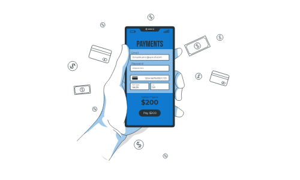

Transaction Pending

Transaction in progress
Your transfer request was successful
We would never ask you for any sensitive information please do not divulge or share your bank details with anyone as we cannot help you recover any lost assets
return to dashboard